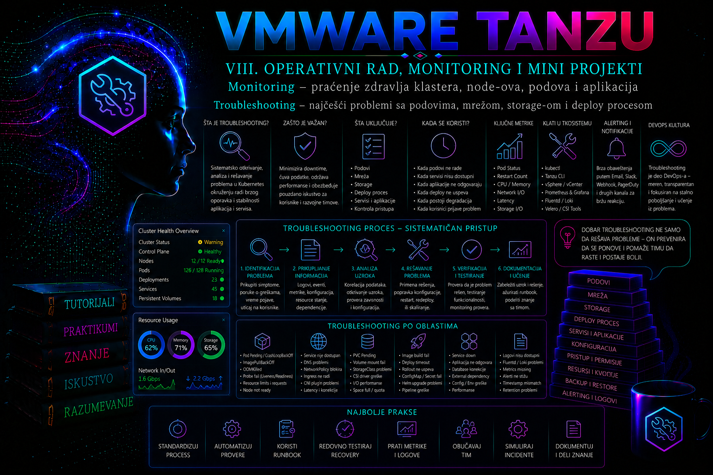

VMware & Tanzu

Zašto troubleshooting zahteva metod, a ne nasumično menjanje konfiguracije
Troubleshooting u Kubernetes i Tanzu okruženju nije traženje komande koja će „naterati” aplikaciju da proradi, već kontrolisan proces kojim administrator utvrđuje na kom sloju je nastao problem, prikuplja dokaze, proverava hipotezu, primenjuje najmanju bezbednu promenu i potvrđuje da je uzrok zaista uklonjen. Nasumično restartovanje podova, brisanje resursa ili menjanje više parametara istovremeno može privremeno ukloniti simptom, ali istovremeno uništava dokaze, povećava obim incidenta i otežava pronalaženje osnovnog uzroka.
U Tanzu okruženju isti korisnički simptom može poticati iz više domena. Poruka „aplikacija nije dostupna” može značiti da kontejner pada, da pod nije spreman, da Service nema endpoint-e, da DNS ne radi, da NetworkPolicy odbacuje saobraćaj, da load balancer nije dobio adresu, da PVC nije montiran ili da rollout nikada nije završio. Zato se dijagnostika vodi od simptoma ka zavisnostima, a ne od omiljene komponente administratora ka nasumično izabranom rešenju.
Osnovno pravilo je: prvo posmatraj, zatim suzi problem, tek onda menjaj. Pre promene treba sačuvati vreme početka incidenta, korisnički simptom, pogođeni namespace, verziju aplikacije, poslednju poznatu ispravnu promenu, trenutno stanje objekata i relevantne događaje i logove. Posle promene proveravaju se isti signali kako bi se dokazalo da je intervencija proizvela očekivani rezultat, a ne samo vremenski koincidirala sa oporavkom sistema.
Administratorski model dijagnostike po slojevima
Efikasan administrator razdvaja problem na kontrolne ravni. Prvi sloj je pristup Kubernetes API serveru i tačnost aktivnog konteksta. Drugi je deklarisano stanje workload-a: Deployment, StatefulSet, Job ili drugi kontroler. Treći je stvarno stanje podova, init kontejnera i aplikacionih procesa. Četvrti obuhvata Service, endpoint-e, DNS, CNI i mrežne politike. Peti obuhvata PersistentVolumeClaim, StorageClass, CSI drajver i infrastrukturu skladištenja. Iznad njih se nalaze GitOps, CI/CD, admission kontrole i Tanzu upravljanje životnim ciklusom, dok su ispod njih node-ovi, container runtime, vSphere resursi, mreža i datastore.
| Sloj | Početna provera | Tipičan dokaz problema |
|---|---|---|
| Pristup i kontekst | kubectl config current-context i kubectl auth can-i |
Pogrešan klaster, istekao pristup, zabrana RBAC-a ili nedostupan API server |
| Deployment i rollout | kubectl rollout status i kubectl describe deployment |
Nedostupne replike, pogrešan image, neuspešan admission ili istekao progress deadline |
| Pod i kontejner | kubectl get pod, describe i logs |
Pending, ImagePullBackOff, CrashLoopBackOff, OOMKilled ili probe failure |
| Mreža i Service | Selektori, EndpointSlice, DNS i test konekcije | Service bez endpoint-a, pogrešan port, neuspešan DNS ili blokirana NetworkPolicy |
| Storage | PVC status, događaji, StorageClass i CSI komponente | Pending claim, neuspešno provisioniranje, attach ili mount greška |
| Node i infrastruktura | kubectl get nodes, uslovi i resursi |
NotReady, DiskPressure, MemoryPressure, nedostupan runtime, mreža ili datastore |
Redosled nije apsolutan. Kada monitoring jasno pokazuje da su svi podovi na jednom node-u istovremeno postali nedostupni, administrator će ranije proveriti node i infrastrukturni sloj. Kada je incident počeo neposredno nakon deploy-a, prvo će analizirati rollout i razliku između nove i prethodne revizije. Metod ostaje isti: činjenice određuju sledeći korak.
Početna provera pristupa, konteksta i obima incidenta
Pre analize aplikacije mora se potvrditi da se komande izvršavaju nad pravim klasterom i namespace-om. Pogrešan kontekst može dovesti do lažnog zaključka da resurs ne postoji, ali i do ozbiljnije posledice: promene u pogrešnom produkcionom ili razvojnom okruženju. U vSphere Supervisor i vSphere Kubernetes Service okruženjima pristup može uključivati kubectl vsphere login, dok samostalni Tanzu Kubernetes Grid može koristiti kubeconfig koji izdaje management cluster ili platforma za upravljanje. Konkretan postupak zavisi od verzije i modela implementacije, ali provera aktivnog konteksta ostaje obavezna.
kubectl config current-context
kubectl config get-contexts
kubectl cluster-info
kubectl get namespace
kubectl auth can-i get pods -n payments-prod
kubectl auth can-i patch deployments.apps -n payments-prodKomande treba da potvrde identitet klastera, dostupnost API servera, postojanje namespace-a i prava potrebna za posmatranje ili odobrenu intervenciju. Greške tipa Forbidden ukazuju na RBAC ili admission ograničenje, dok connection refused, TLS greške i timeout mogu ukazivati na neispravan kubeconfig, DNS, sertifikat, mrežnu putanju ili nedostupan API endpoint. Administrator ne sme zaobići problem korišćenjem šire administratorske uloge bez odobrenja; traži se najmanji skup prava potreban za konkretan incident.
Obim incidenta zatim se određuje poređenjem namespace-ova, replika, node-ova i verzija. Problem jedne replike na jednom node-u razlikuje se od problema svih replika, svih aplikacija u namespace-u ili celog klastera. Vreme događaja treba povezati sa audit zapisima, Git commit-om, CI/CD izvršenjem, promenom image-a, rotacijom Secret-a, promenom StorageClass-a ili infrastrukturnim događajem u vCenter-u.
Identitet, autorizacija, sertifikati i admission sloj
Greška pristupa mora se razložiti na autentikaciju, autorizaciju i admission. Autentikacija utvrđuje ko poziva API; autorizacija, najčešće RBAC, odlučuje da li taj identitet sme da izvrši operaciju; admission kontroleri zatim proveravaju ili menjaju zahtev pre upisa objekta. Zbog toga uspešan login ne dokazuje da korisnik ima pravo nad konkretnim namespace-om, a rezultat kubectl auth can-i ne garantuje da će zahtev proći validacionu ili bezbednosnu admission politiku.
U vSphere Supervisor i aktuelnom vSphere Kubernetes Service modelu kubectl vsphere login autentikuje korisnika prema Supervisor endpoint-u, a dostupni konteksti zavise od prava dodeljenih na vSphere Namespace-u. Promena dozvole se pouzdano proverava novim login-om, jer postojeći kubeconfig i token ne moraju odmah prikazati nov skup konteksta. Nazivi proizvoda i ekrani razlikuju se između vSphere 8 i vSphere 9 izdanja; u starijoj dokumentaciji mogu se pojaviti nazivi Tanzu Kubernetes Grid Service, TKG Service cluster ili guest cluster, dok aktuelni materijal koristi vSphere Kubernetes Service i VKS cluster.
kubectl config view --minify
kubectl auth whoami
kubectl auth can-i get pods -n payments-prod
kubectl auth can-i --list -n payments-prod
kubectl get events -n payments-prod \
--field-selector=reason=FailedCreate \
--sort-by='.metadata.creationTimestamp'Sve navedene komande su read-only. kubectl auth whoami nije dostupan na svim starijim Kubernetes serverima; tada se identitet potvrđuje postupkom prijavljivanja, sadržajem aktivnog konteksta i audit zapisom. Kod Unauthorized proveravaju se važenje tokena, kubeconfig credential plugin, vreme na klijentu i platformi, lanac poverenja i API endpoint. Kod Forbidden proveravaju se korisnik ili grupa, Role/ClusterRole i binding, namespace i traženi glagol. Poruke webhook-a, Pod Security upozorenja, zabrana image registra ili potpisa ukazuju na admission sloj, a ne na RBAC.
TLS grešku ne treba „rešavati” opcijom --insecure-skip-tls-verify u produkciji. Najpre se proveravaju tačno vreme, DNS ime endpoint-a, SAN vrednosti sertifikata, izdavalac i potpuni trust chain. NTP odstupanje može učiniti SAML ili drugi kratkotrajni token nevažećim iako su lozinka i RBAC ispravni. Dekodirane tokene, klijentske ključeve, kubeconfig fajlove i Secret vrednosti ne treba unositi u tiket; dovoljan je redigovan dokaz o identitetu, izdavaocu, vremenu važenja i poruci greške.
Klaster i control plane: granica samostalne intervencije
Kada kubectl ne može da dođe do API servera, isti simptom može poticati od klijentskog DNS-a ili proxy-ja, firewall-a, load balancer VIP-a, rute do workload mreže, nedostupnog kube-apiserver-a ili gubitka etcd quorum-a. Provera ide spolja ka unutra: razrešavanje FQDN-a, TCP dostupnost porta 6443, TLS odgovor, load balancer i endpoint-i, stanje control plane VM-ova u vCenter-u, pa tek zatim vendor-podržana analiza sistemskih komponenti.
getent hosts <cluster-api-fqdn>
curl --connect-timeout 5 -kI https://<cluster-api-fqdn>:6443/readyz
kubectl get --raw='/readyz?verbose'
kubectl get nodes -o wide
kubectl get pods -A -o wideBezbednosna napomena: curl -k je ovde samo ograničen dijagnostički test TCP/TLS odziva i ne potvrđuje identitet servera; rezultat se mora ponoviti sa ispravnim CA poverenjem. /readyz može zahtevati autorizaciju. Ako VIP odgovara, ali API nije spreman, proveravaju se platformni alarmi i support bundle. Ako VIP ne odgovara, a control plane VM-ovi rade, prioritet su load balancer, ruta, firewall, MTU i workload mreža.
Supervisor control plane VM-ovi i njihov etcd su platformom upravljane komponente. Broadcom izričito ograničava direktan pristup na prikupljanje dokaza i vendor-odobrene postupke: ručno menjanje manifesta, brisanje podataka, restartovanje ili rekonfigurisanje etcd članova može trajno oštetiti Supervisor i ugroziti podržanost. Gubitak quorum-a, nedostupnost više control plane članova, nekonzistentni endpoint-i ili sumnja na korupciju zahtevaju hitnu eskalaciju i support bundle pre promene. Ista disciplina važi za VKS control plane: node-level komande koriste se samo kada je dokumentacija za instaliranu verziju izričito predviđa ili kada ih vodi Broadcom Support.
| Simptom | Najmanje invazivan dokaz | Vlasnik sledećeg koraka |
|---|---|---|
| Samo jedan korisnik nema kontekst | Novi login, namespace dozvole, auth can-i i audit | Identity/RBAC administrator |
| Svi korisnici imaju TLS ili token grešku | DNS, NTP, sertifikat, trust chain i platformni događaji | Platformski i PKI tim |
| VIP ne odgovara na portu 6443 | DNS, ruta, firewall, load balancer i vCenter stanje VM-ova | Mrežni i platformski tim |
VIP odgovara, readyz ne prolazi | Alarmi, sistemski podovi i support bundle | Platformski tim/Broadcom Support |
Više node-ova je NotReady | Node uslovi, zajednički ESXi host, mreža, datastore i vreme događaja | Platformski, vSphere, mrežni ili storage tim |
Problemi sa podovima i kontejnerima
Status pod-a je početni signal, ali nije dijagnoza. Pending znači da pod još nije spreman za izvršavanje, ali uzrok može biti neuspešno raspoređivanje, nedostupan PVC, nedovoljan CPU ili memorija, taint bez odgovarajuće tolerancije, affinity pravilo ili ograničenje kvote. ContainerCreating često ukazuje na preuzimanje image-a, kreiranje sandbox-a, CNI konfiguraciju ili mount volumena. ImagePullBackOff znači da je Kubernetes nakon neuspešnog preuzimanja image-a prešao na ponavljanje sa odlaganjem. CrashLoopBackOff znači da se proces pokreće, završava neuspešno i ponovo pokreće; sam status ne govori zašto proces pada.
kubectl get pods -n payments-prod -o wide
kubectl describe pod -n payments-prod <pod-name>
kubectl get events -n payments-prod \
--sort-by='.metadata.creationTimestamp'
kubectl logs -n payments-prod <pod-name> -c payments-api
kubectl logs -n payments-prod <pod-name> -c payments-api --previousdescribe prikazuje uslove pod-a, stanje i poslednje završavanje svakog kontejnera, node, probe, mount-ove i događaje. Događaji su korisni, ali imaju ograničeno vreme čuvanja i mogu se ponavljati, pa nisu zamena za centralizovane logove. Opcija --previous je naročito važna kod CrashLoopBackOff stanja jer prikazuje izlaz prethodne instance kontejnera. Kod više kontejnera mora se navesti tačan kontejner; inače administrator može analizirati sidecar umesto glavne aplikacije.
Razlog OOMKilled ukazuje da je kontejner premašio memorijski limit ili da je bio pogođen pritiskom memorije. Prva reakcija nije automatsko povećanje limita. Potrebno je uporediti trenutnu i istorijsku potrošnju, aplikacioni profil, heap podešavanja, curenje memorije i kapacitet node-a. Kod probe grešaka proveravaju se putanja, port, protokol, timeout, početno kašnjenje i stvarno vreme inicijalizacije. Readiness probe sprečava slanje saobraćaja nespremnom pod-u; liveness probe može restartovati proces koji je živ, ali spor. Startup probe je prikladna za aplikacije sa dugim pokretanjem jer odlaže aktiviranje liveness i readiness provera.
Kada standardni image nema shell ili dijagnostičke alate, ne treba menjati produkcioni image samo radi incidenta. Uz odgovarajuća prava može se koristiti kubectl debug sa privremenim ephemeral kontejnerom. Ovaj postupak mora poštovati Pod Security, admission pravila i internu politiku, jer dijagnostički image uvodi dodatni softver i potencijalno šira prava u produkcioni namespace.
Scheduling, node i resursni problemi
Ako pod nije raspoređen, događaj FailedScheduling obično navodi koji uslov nije ispunjen. Administrator proverava zahteve i limite, slobodne resurse, node selektore, affinity, topology spread, taint-ove, tolerancije i vezu sa volumenom. Zahtev od 4 CPU ne može biti raspoređen na node koji ima dovoljno ukupnog kapaciteta, ali nema 4 slobodna CPU prema scheduler obračunu. Slično tome, PVC sa topološkim ograničenjem može vezati pod za zonu u kojoj nema odgovarajućeg node-a.
kubectl describe pod -n payments-prod <pending-pod>
kubectl get nodes
kubectl describe node <node-name>
kubectl top nodes
kubectl top pods -n payments-prod --containers
kubectl get resourcequota,limitrange -n payments-prodkubectl top zahteva funkcionalan Metrics API i daje trenutni, a ne istorijski prikaz. Za trendove se koriste monitoring podaci. Node uslovi MemoryPressure, DiskPressure, PIDPressure i Ready pomažu pri razlikovanju aplikacionog od infrastrukturnog problema. Ako je node NotReady, administrator proverava koliko workload-a je pogođeno, da li kontroleri premeštaju podove i da li postoje lokalni ili attach-ovani volumeni koji ograničavaju bezbedan oporavak.
Pristup node-u, restart kubelet-a, container runtime-a ili mrežnog agenta predstavlja privilegovanu infrastrukturnu intervenciju. Takav postupak se izvodi prema dokumentaciji tačne Tanzu i vSphere verzije i uz podršku platformskog tima. Ručni restart sistemskih komponenti bez analize može izazvati prekid više aplikacija ili prikriti kvar mreže, diska ili virtuelne mašine.
Mrežni problemi: Service, DNS, portovi i NetworkPolicy
Kada podovi rade, a aplikacija nije dostupna, dijagnostika se nastavlja od aplikacionog procesa ka potrošaču. Najpre se proverava da li aplikacija sluša na očekivanom portu i adresi. Proces koji sluša samo na 127.0.0.1 neće biti dostupan preko pod IP adrese. Zatim se proveravaju readiness stanje, Service selektor, EndpointSlice objekti, port i targetPort. Service bez endpoint-a najčešće znači da selektor ne odgovara labelama spremnih podova.
kubectl get pod -n payments-prod --show-labels
kubectl get service payments-api -n payments-prod -o yaml
kubectl get endpointslice -n payments-prod \
-l kubernetes.io/service-name=payments-api
kubectl describe service payments-api -n payments-prodDNS se testira iz pod-a koji pripada istoj mrežnoj i bezbednosnoj zoni kao stvarni klijent. Uspešno razrešavanje imena ne dokazuje da je aplikacioni port dostupan, a uspešan TCP spoj ne dokazuje da aplikacija vraća ispravan HTTP odgovor. Zbog toga se odvojeno proveravaju DNS, transport i aplikacioni protokol.
kubectl run netcheck -n payments-prod \
--image=curlimages/curl:8.10.1 \
--restart=Never --command -- sleep 1800
kubectl exec -n payments-prod netcheck -- \
nslookup payments-api.payments-prod.svc.cluster.local
kubectl exec -n payments-prod netcheck -- \
curl -sS --connect-timeout 3 \
http://payments-api:8080/health/readyVerzija dijagnostičkog image-a treba da bude dozvoljena, skenirana i po mogućnosti preuzeta iz internog registry-ja. Ako DNS upit ne uspe, proveravaju se CoreDNS podovi, konfiguracija, upstream DNS i mrežna dostupnost DNS servisa. Ako DNS radi, ali konekcija ima timeout, mogući uzroci su NetworkPolicy, CNI, Service dataplane, firewall ili aplikacija koja ne sluša. Connection refused tipično znači da je cilj dostupan, ali na odredišnom portu nema procesa koji prihvata vezu. Timeout češće ukazuje na odbacivanje paketa, nedostupnu putanju ili tiho filtriranje.
NetworkPolicy ima efekat samo ako je implementira mrežni dodatak korišćen u klasteru. Politike se analiziraju zajedno: pod može biti izolovan za ingress, egress ili oba smera, a dozvole iz više politika se kombinuju. Brisanje svih politika radi testa nije prihvatljiva produkciona metoda. Bezbedniji postupak je privremena, usko ograničena politika sa tačnim namespace i pod selektorima, portom i evidentiranim vremenom uklanjanja.
Storage problemi: PVC, provisioniranje, attach i mount
Storage incident se deli na četiri faze: izbor i vezivanje volumena, dinamičko provisioniranje, attach uređaja node-u i mount u pod. PVC u stanju Pending zahteva proveru StorageClass-a, provisioner-a, parametara, kvota, topologije i događaja. Vezan PVC ne garantuje da će pod uspešno montirati volumen; problem može nastati u CSI attach ili node mount fazi.
kubectl get pvc -n payments-prod
kubectl describe pvc payments-data -n payments-prod
kubectl get pv
kubectl get storageclass
kubectl describe pod -n payments-prod <pod-name>
kubectl get csidrivers
kubectl get csinodesDogađaji ProvisioningFailed, FailedAttachVolume i FailedMount pripadaju različitim fazama i ne rešavaju se istom intervencijom. Administrator proverava da li je StorageClass namenjen datom klasteru, da li postoji podrazumevana klasa kada manifest ne navodi storageClassName, da li datastore ima kapacitet i pristupačnost i da li CSI kontrolerske i node komponente rade. U vSphere okruženju dodatna analiza može zahtevati pregled vCenter zadataka, CNS objekta, datastore-a i Broadcom Knowledge Base postupka za tačnu verziju.
Brisanje PVC-a je rizično. U zavisnosti od reclaimPolicy, vezani PV i podaci mogu biti trajno obrisani. Pre bilo kakvog brisanja administrator potvrđuje politiku zadržavanja, identitet volumena, backup, poslovnog vlasnika i plan oporavka. Promena StorageClass-a postojećeg PVC-a nije opšti način popravke; često je potrebno napraviti novi PVC, migrirati podatke i kontrolisano prebaciti workload.
Problemi sa deploy i rollout procesom
Deployment može biti tehnički kreiran, a ipak neuspešan u operativnom smislu. Novi ReplicaSet može imati podove u CrashLoopBackOff stanju, readiness probe može ostati neuspešna, image može biti nedostupan ili scheduler može ostaviti replike u Pending stanju. kubectl rollout status povezuje ove simptome sa napretkom Deployment-a, dok rollout history prikazuje revizije koje Kubernetes čuva u okviru podešenog limita istorije.
kubectl get deployment payments-api -n payments-prod
kubectl describe deployment payments-api -n payments-prod
kubectl rollout status deployment/payments-api \
-n payments-prod --timeout=120s
kubectl rollout history deployment/payments-api -n payments-prod
kubectl get replicaset -n payments-prod \
-l app.kubernetes.io/name=payments-apiAdministrator mora utvrditi ko je vlasnik deklarisanog stanja. Ako resurs kontroliše GitOps, ručna izmena može biti automatski vraćena ili stvoriti drift. Ispravka se tada unosi u Git repozitorijum i prolazi odobreni tok, osim kada incident procedura dopušta hitnu promenu uz naknadnu sinhronizaciju. Ako deploy dolazi iz CI/CD sistema, analiziraju se artefakt, image digest, manifest, admission rezultat i identitet servisnog naloga.
Rollback je opravdan kada je prethodna revizija poznato ispravna, kompatibilna sa trenutnim podacima i konfiguracijom i kada vraćanje aplikacije smanjuje rizik brže od popravke unapred. Nije bezbedan kada je nova verzija izvršila nepovratnu migraciju baze, promenila format podataka ili zavisi od Secret-a koji više ne postoji. Pre rollback-a proveravaju se release beleške, migracije, kompatibilnost i poslednja poznata funkcionalna revizija.
Logovi, događaji i dokazi koji se čuvaju tokom incidenta
Kubernetes događaji opisuju odluke i greške kontrolera, scheduler-a, kubelet-a i storage ili mrežnih komponenti. Kontejnerski logovi opisuju ponašanje aplikacije. Audit zapis pokazuje ko je pozvao API, nad kojim objektom i sa kojim rezultatom. Tanzu dijagnostički paketi i platformni logovi dopunjuju sliku kada problem zahvata klaster ili infrastrukturu. Nijedan izvor samostalno nije dovoljan.
Za svaki incident treba sačuvati izlaz komandi sa vremenom prikupljanja, relevantne YAML objekte uz uklanjanje Secret vrednosti, prethodne i trenutne logove kontejnera, događaje, rollout reviziju, Git commit ili pipeline identifikator i infrastrukturne događaje. Tajne se ne kopiraju u tiket ili chat. Kod Secret objekta dokumentuju se naziv, verzija i vreme promene, ali ne i dekodirana vrednost.
Za standalone Tanzu Kubernetes Grid odgovarajuća verzija Tanzu CLI-ja može obezbediti diagnostics dodatak i prikupljanje paketa za management ili workload cluster. Nazivi i mogućnosti komandi zavise od izdanja, pa se koriste isključivo prema dokumentaciji instalirane verzije. Kod vSphere Supervisor i vSphere Kubernetes Service okruženja prikupljanje logova može uključivati vCenter interfejs, platformne support bundle procedure i Broadcom Support alate. Dijagnostički paket može sadržati osetljive podatke i mora se čuvati u kontrolisanom repozitorijumu incidenta.
Od simptoma do osnovnog uzroka i trajne mere
Incident zapis mora razlikovati šest pojmova. Simptom je ono što korisnik ili monitoring vidi; obim opisuje pogođene korisnike, namespace-ove, klastere i vreme; posledica meri poslovni i tehnički uticaj; neposredni uzrok je događaj koji je direktno proizveo kvar; osnovni uzrok objašnjava zašto su sistem i proces dozvolili da taj događaj izazove incident; korektivna mera sprečava ponavljanje ili smanjuje posledicu. Workaround vraća uslugu bez uklanjanja osnovnog uzroka i zato mora imati rok, vlasnika i plan uklanjanja.
| Faza | Pitanje | Dokaz završetka |
|---|---|---|
| Stabilizacija | Kako ograničiti uticaj najmanjom reverzibilnom promenom? | SLO signal se oporavlja bez širenja incidenta |
| Potvrda uzroka | Koji nalaz objašnjava sve ključne simptome i vremensku liniju? | Hipoteza je potvrđena logom, događajem, metrikom ili kontrolisanim testom |
| Trajna korekcija | Koja promena uklanja uzrok u deklarisanom izvoru istine? | Promena je pregledana, testirana, uvedena i merljivo validirana |
| Prevencija | Koja kontrola ranije otkriva ili sprečava isti obrazac? | Alarm, policy, test ili runbook ima vlasnika i datum provere |
Integrisani praktikum: dijagnostika neuspešnog izdanja aplikacije
Poslovni i tehnički kontekst. Produkciona aplikacija za obradu plaćanja radi u workload klasteru tkg-prod-01, u namespace-u payments-prod. Deployment payments-api koristi tri replike, interni Service payments-api na portu 8080 i PVC payments-data. Nakon izdavanja verzije 2.4.0 korisnički zahtevi vraćaju grešku, rollout ne završava, a jedna nova replika ostaje u CrashLoopBackOff stanju. Praktikum namerno povezuje deploy, pod, mrežu i storage proveru, ali menja samo potvrđeni uzrok.
Cilj. Utvrditi da li problem potiče od rollout-a, aplikacionog procesa, Service konfiguracije, mrežne politike ili PVC-a; bezbedno vratiti dostupnost; sačuvati dokaze i potvrditi merljive kriterijume prihvatanja.
Referentno okruženje i preduslovi. Administrator ima ispravan kubeconfig za tkg-prod-01, pravo čitanja podova, događaja, logova, Deployment-a, Service-a, EndpointSlice i PVC objekata i odobreno pravo za rollback Deployment-a. Postojeći objekti su payments-api, payments-data i NetworkPolicy payments-allow-api. Dijagnostički image registry.example.internal/ops/curl:8.10.1 prethodno je skeniran i odobren. Promena je otvorena pod identifikatorom INC-2026-0738.
-
Potvrditi kontekst, prava i početno vreme.
Ovaj korak sprečava rad u pogrešnom klasteru i utvrđuje da li administrator ima samo prava koja su potrebna.
Validacija: aktivni kontekst mora odgovarati klasterudate -Iseconds kubectl config current-context kubectl cluster-info kubectl auth can-i get pods -n payments-prod kubectl auth can-i get pods/log -n payments-prod kubectl auth can-i patch deployments.apps -n payments-prodtkg-prod-01, API server mora odgovoriti, a tri provere ovlašćenja treba da vrateyes. Ako pravo za patch ne postoji, administrator nastavlja dijagnostiku, ali rollback eskalira ovlašćenom deployment timu. -
Odrediti obim incidenta i sačuvati početno stanje.
Jednim pregledom povezuju se Deployment, ReplicaSet, podovi, Service i PVC. Izlaz se čuva u direktorijumu incidenta bez Secret podataka.
Validacija: očekuje se da stari ReplicaSet još ima dostupne replike, novi ReplicaSet revizije za verziju 2.4.0 nema sve dostupne replike, Service postoji, a PVC je prikazan kaomkdir -p "$HOME/incidents/INC-2026-0738" kubectl get deployment,replicaset,pod,service,pvc \ -n payments-prod -o wide \ | tee "$HOME/incidents/INC-2026-0738/initial-state.txt" kubectl get events -n payments-prod \ --sort-by='.metadata.creationTimestamp' \ | tee "$HOME/incidents/INC-2026-0738/events-initial.txt" kubectl rollout history deployment/payments-api \ -n payments-prod \ | tee "$HOME/incidents/INC-2026-0738/rollout-history.txt"Bound. Ako su pogođeni i drugi workload-i ili node-ovi, incident se proširuje na klasterski ili infrastrukturni nivo. -
Analizirati Deployment i neuspešan pod bez menjanja stanja.
Naziv novog problematičnog pod-a dobija se prema labelama, a zatim se čuvaju opis i logovi prethodne instance kontejnera.
Validacija: promenljivakubectl describe deployment payments-api -n payments-prod \ | tee "$HOME/incidents/INC-2026-0738/deployment-describe.txt" kubectl get pods -n payments-prod \ -l app.kubernetes.io/name=payments-api \ -o custom-columns='NAME:.metadata.name,IMAGE:.spec.containers[0].image,READY:.status.containerStatuses[0].ready,RESTARTS:.status.containerStatuses[0].restartCount,PHASE:.status.phase' FAILED_POD=$(kubectl get pods -n payments-prod \ -l app.kubernetes.io/name=payments-api \ -o jsonpath='{range .items[?(@.status.containerStatuses[0].restartCount>0)]}{.metadata.name}{"\n"}{end}' \ | head -n 1) kubectl describe pod "$FAILED_POD" -n payments-prod \ | tee "$HOME/incidents/INC-2026-0738/failed-pod-describe.txt" kubectl logs "$FAILED_POD" -n payments-prod \ -c payments-api --previous \ | tee "$HOME/incidents/INC-2026-0738/failed-pod-previous.log"FAILED_PODmora sadržati naziv pod-a. U scenariju se u prethodnom logu očekuje greška da direktorijum/var/lib/payments/cachenije upisiv, dokdescribepokazuje da je kontejner završen sa nenultim kodom. Ako nema prethodnog loga, proveravaju se trenutni log i termination razlog. -
Proveriti storage bez brisanja PVC-a.
PVC stanje, događaji i pod mount informacije razlikuju problem provisioniranja od aplikacione dozvole unutar već montiranog volumena.
Validacija: PVC treba da budekubectl get pvc payments-data -n payments-prod -o wide kubectl describe pvc payments-data -n payments-prod \ | tee "$HOME/incidents/INC-2026-0738/pvc-describe.txt" kubectl get pod "$FAILED_POD" -n payments-prod \ -o jsonpath='{range .spec.volumes[*]}{.name}{" => "}{.persistentVolumeClaim.claimName}{"\n"}{end}' kubectl get pod "$FAILED_POD" -n payments-prod \ -o jsonpath='{range .spec.containers[?(@.name=="payments-api")].volumeMounts[*]}{.name}{" => "}{.mountPath}{"\n"}{end}'Bound, bezProvisioningFailed,FailedAttachVolumeiliFailedMountdogađaja, a volumen treba da bude montiran na očekivanoj putanji. To potvrđuje da storage infrastruktura nije primarni uzrok; problem je verovatnije promenjeni security context ili vlasništvo direktorijuma u verziji 2.4.0. -
Isključiti Service i mrežu kao uzrok korisničkog simptoma.
Proveravaju se labele, Service selektor i EndpointSlice, a zatim se iz odobrenog dijagnostičkog pod-a testiraju DNS i HTTP prema Service-u.
Validacija: EndpointSlice treba da sadrži najmanje endpoint-e starih spremnih replika, DNS mora vratiti ClusterIP Service-a, a HTTP test treba da vratikubectl get pod -n payments-prod \ -l app.kubernetes.io/name=payments-api --show-labels kubectl describe service payments-api -n payments-prod kubectl get endpointslice -n payments-prod -l kubernetes.io/service-name=payments-api -o wide kubectl run netcheck -n payments-prod \ --image=registry.example.internal/ops/curl:8.10.1 \ --restart=Never --command -- sleep 1800 kubectl wait -n payments-prod --for=condition=Ready \ pod/netcheck --timeout=60s kubectl exec -n payments-prod netcheck -- \ nslookup payments-api.payments-prod.svc.cluster.local kubectl exec -n payments-prod netcheck -- \ curl -sS -o /dev/null -w '%{http_code}\n' \ --connect-timeout 3 http://payments-api:8080/health/ready200. Time se dokazuje da mreža i Service rade za preostale zdrave replike, iako kapacitet i rollout nisu u prihvatljivom stanju. -
Izvesti negativni mrežni test.
Test prema namerno pogrešnom portu pokazuje kako se razlikuje funkcionalan Service od porta na kome ništa ne sluša.
Validacija: komanda mora da završi greškom, najčešćekubectl exec -n payments-prod netcheck -- \ curl -sS --connect-timeout 3 \ http://payments-api:65530/health/readyConnection refusedili timeout-om, dok test na portu 8080 ostaje uspešan. Ovaj rezultat ne sme biti protumačen kao kvar DNS-a jer je isto ime već uspešno razrešeno. -
Potvrditi razliku između revizija i doneti odluku o rollback-u.
Pre promene proverava se image aktivnih ReplicaSet objekata i istorija revizija. Poslovni vlasnik potvrđuje da verzija 2.4.0 nije izvršila nepovratnu migraciju podataka.
Validacija: revizija 7 treba da koristi poznato ispravnu verzijukubectl get replicaset -n payments-prod \ -l app.kubernetes.io/name=payments-api \ -o custom-columns='NAME:.metadata.name,REVISION:.metadata.annotations.deployment\.kubernetes\.io/revision,IMAGE:.spec.template.spec.containers[0].image,DESIRED:.spec.replicas,READY:.status.readyReplicas' kubectl rollout history deployment/payments-api \ -n payments-prod --revision=7 kubectl rollout history deployment/payments-api \ -n payments-prod --revision=82.3.6, a revizija 8 problematičnu verziju2.4.0. Rollback se odobrava samo ako je revizija 7 kompatibilna sa trenutnom bazom, Secret-ima i konfiguracijom. -
Bezbedno vratiti prethodnu reviziju.
Upozorenje: rollback menja aktivni workload i može biti nebezbedan posle nepovratnih migracija. U GitOps okruženju najpre se zaustavlja ili koordinira automatsko vraćanje željenog stanja, a trajna ispravka unosi se u Git.
Validacija: rollout mora završiti porukom da je Deployment uspešno uveden. Ako timeout istekne, ne ponavlja se rollback naslepo; ponovo se proveravaju podovi, događaji, storage i node uslovi, a incident se eskalira.kubectl rollout undo deployment/payments-api \ -n payments-prod --to-revision=7 kubectl rollout status deployment/payments-api \ -n payments-prod --timeout=180s -
Izvršiti završnu funkcionalnu proveru.
Proveravaju se broj dostupnih replika, image, restartovanja, endpoint-i i više uzastopnih HTTP zahteva.
Validacija: Deployment mora imati tri od tri dostupne replike, svi podovi moraju biti Ready, broj restartovanja novih podova ne sme rasti, EndpointSlice mora sadržati tri spremna endpoint-a, a svih pet HTTP zahteva mora vratitikubectl get deployment payments-api -n payments-prod kubectl get pods -n payments-prod \ -l app.kubernetes.io/name=payments-api -o wide kubectl get endpointslice -n payments-prod \ -l kubernetes.io/service-name=payments-api -o wide for i in 1 2 3 4 5; do kubectl exec -n payments-prod netcheck -- \ curl -sS -o /dev/null -w '%{http_code}\n' \ http://payments-api:8080/health/ready done kubectl get events -n payments-prod \ --sort-by='.metadata.creationTimestamp' | tail -n 30 \ | tee "$HOME/incidents/INC-2026-0738/events-final.txt"200. -
Cleanup i dokumentovanje incidenta.
Dijagnostički pod se uklanja, dok se prikupljeni dokazi i odluke zadržavaju prema politici incidentnog upravljanja.
Validacija: API treba da prijavi da dijagnostički pod više ne postoji. U incident zapisu dokumentuju se uzrok, pogođena verzija, revizija na koju je izvršen rollback, vreme oporavka, validacioni rezultati i korektivna akcija: ispravka vlasništva i security context-a pre ponovnog izdavanja verzije 2.4.0.kubectl delete pod netcheck -n payments-prod kubectl get pod netcheck -n payments-prod kubectl get deployment payments-api -n payments-prod -o yaml | sed '/managedFields:/,$d' > "$HOME/incidents/INC-2026-0738/deployment-final.yaml"
Merljivi kriterijumi prihvatanja. Deployment ima tri dostupne replike najmanje deset minuta; nijedan aplikacioni pod ne povećava restart count; PVC ostaje Bound bez novih attach ili mount grešaka; Service ima tri spremna endpoint-a; pet uzastopnih internih health zahteva vraća HTTP 200; monitoring ne pokazuje novu grešku u stopi zahteva; dijagnostički pod je uklonjen; incident dokument sadrži vremensku liniju, dokaze, uzrok, promenu, validaciju i vlasnika trajne korektivne mere.
Tipične greške u troubleshooting postupku
- Brisanje problematičnog pod-a pre čuvanja logova. Novi pod može proraditi na drugom node-u, ali se gubi prethodni log i dokaz koji je razlikovao aplikacioni od infrastrukturnog uzroka.
- Menjanje više slojeva istovremeno. Istovremena promena probe, limita, Service selektora i NetworkPolicy onemogućava dokazivanje koja je promena uklonila problem i povećava rizik novog kvara.
- Tumačenje statusa kao uzroka. CrashLoopBackOff je obrazac ponovnog pokretanja, Pending stanje čekanja, a ContainerCreating faza pripreme; pravi uzrok se nalazi u događajima, stanju kontejnera, logovima i zavisnostima.
- Ignorisanje prethodne revizije i vremena promene. Bez povezivanja incidenta sa image digest-om, Git commit-om, pipeline izvršenjem i audit zapisom lako se analizira pogrešan događaj.
- Privremeno proširenje prava bez kontrole. Cluster-admin pristup možda ubrzava intervenciju, ali povećava posledice greške i krši princip najmanjih privilegija. Potrebno je vremenski ograničeno, odobreno i auditovano pravo.
- Brisanje PVC-a kao pokušaj popravke. To može trajno ukloniti podatke. Najpre se utvrđuje faza kvara, reclaim politika, backup i identitet infrastrukturnog volumena.
- Ručna izmena objekta kojim upravlja GitOps. Kontroler može vratiti staro stanje, pa incident postaje ciklus međusobnog prepisivanja. Hitna promena mora biti koordinisana sa reconciliation procesom.
Administratorske prakse
- Voditi standardnu početnu dijagnostiku. Za svaki incident proveravaju se kontekst, prava, Deployment, podovi, događaji, Service endpoint-i, PVC i node uslovi pomoću odobrene skripte ili runbook-a. Izvršava se odmah po prijavi i posle svake promene. Reakciju zahtevaju nedostupne replike, rast restartovanja, novi warning događaji ili node koji nije Ready. Rezultati se čuvaju u incident sistemu, a uspešnost se meri procentom incidenata sa kompletnim početnim dokazima i vremenom do pravilne klasifikacije sloja kvara.
- Korelirati incidente sa promenama. Prate se Kubernetes audit zapisi, Git istorija, CI/CD izvršenja, rollout revizije i vCenter događaji. Korelacija se radi za svako novo pogoršanje i tokom postincidentne analize. Promena neposredno pre incidenta nije automatski uzrok, ali zahteva proveru. Dokumentuju se commit, image digest, izvršilac, vreme i odobrenje. Uspeh se meri mogućnošću da se svaka produkciona revizija poveže sa izvorom i pipeline izvršenjem.
- Pratiti restartovanja, probe i čekanje rollout-a. Monitoring i komande
kubectl get pods,kubectl rollout statusi aplikacione metrike proveravaju se posle svakog deploy-a i kontinuirano kroz alarme. Rast restart count-a, nedostupna replika duža od dogovorenog rollout prozora ili trajni probe failure zahtevaju pauziranje promocije i čuvanje logova. Dokumentuju se revizija i razlog zaustavljanja. Uspešnost se meri procentom neuspešnih izdanja otkrivenih pre korisničkog uticaja. - Nadzirati kapacitet node-ova i namespace kvote. Koriste se istorijske CPU, memorijske, disk i pod metrike, node uslovi, ResourceQuota i LimitRange. Kapacitet se pregleda najmanje nedeljno i pre velikih izdanja. Kontinuirana potrošnja iznad internog praga, česta evikcija ili FailedScheduling zahtevaju analizu zahteva, skaliranja i kapaciteta, ne automatsko povećavanje svih limita. Odluke se beleže u kapacitetskom planu, a uspeh se meri smanjenjem incidenata izazvanih iscrpljenjem resursa.
- Kontrolisati zdravlje storage lanca. Prate se vreme provisioniranja PVC-a, attach i mount greške, CSI komponente, datastore kapacitet i dostupnost. Provera se radi kontinuirano alarmima i posle storage ili vSphere održavanja. PVC koji ostane Pending iznad definisanog SLO-a ili ponovljene CSI greške zahtevaju proveru događaja i eskalaciju storage timu. Beleže se PVC, PV, StorageClass, node, datastore ili CNS identifikator i vreme. Uspeh se meri vremenom provisioniranja i stopom uspešnih mount operacija.
- Čuvati aplikacione podatke i manifestno stanje prema planu oporavka. Backup obuhvata podatke aplikacije, potrebne Kubernetes objekte, konfiguraciju u Git-u i metapodatke potrebne za rekonstrukciju; Secret materijal čuva se samo u odobrenom zaštićenom sistemu. Učestalost proizlazi iz RPO-a, kopije se čuvaju u odvojenom bezbednosnom domenu, a integritet se proverava statusom backup posla, checksum-om gde je primenljivo i periodičnim restore testom u izolovanom namespace-u ili klasteru. Upotrebljiv backup potvrđuje aplikacija koja posle probnog restore-a uspešno prolazi funkcionalni test i proveru konzistentnosti podataka. Rezultat se evidentira u registru backup i restore testova.
- Održavati verzionisane runbook dokumente. Runbook sadrži početne provere, bezbedne komande, tačke zaustavljanja, eskalacione kontakte, dozvoljene rollback postupke i kriterijume uspeha. Pregleda se posle svakog većeg incidenta, promene Tanzu ili Kubernetes verzije i najmanje kvartalno. Nevažeća komanda ili zastareo naziv proizvoda zahteva neposrednu ispravku. Dokumentuje se vlasnik, verzija, datum testa i podržano okruženje, a uspeh se meri kroz vežbe u kojima drugi administrator može pratiti postupak bez neplaniranih privilegija.
Kontrolna lista
- Potvrđen je aktivni kubeconfig kontekst i identitet ciljnog klastera komandama
kubectl config current-contextikubectl cluster-info. - Komandom
kubectl auth can-ipotvrđena su samo prava potrebna za čitanje i odobrenu promenu u pogođenom namespace-u. - Greška pristupa razvrstana je kao autentikaciona, autorizaciona, TLS/trust ili admission greška; nije zaobiđena nesigurnom opcijom ili trajno proširenim privilegijama.
- Kod nedostupnog API-ja odvojeno su provereni DNS, port 6443, TLS odgovor, VIP/load balancer, control plane spremnost i vSphere stanje, bez nedokumentovane promene na upravljanim control plane VM-ovima.
- Sačuvani su početno vreme, stanje Deployment-a, podova, događaja, Service-a, EndpointSlice i PVC-a pre prve promene.
- Za svaki neispravan pod pregledani su
describe, trenutno stanje kontejnera, termination razlog ilogs --previouskada postoji restartovanje. - Service selektor odgovara labelama podova, a EndpointSlice sadrži očekivani broj spremnih endpoint-a.
- DNS, TCP ili HTTP test izvršen je iz odgovarajuće mrežne zone i rezultat je protumačen odvojeno za svaki sloj.
- PVC je proveren kroz status i događaje; pre bilo kakvog brisanja potvrđeni su reclaim politika, backup i plan oporavka.
- Rollout revizija povezana je sa image digest-om, Git commit-om ili CI/CD izvršenjem.
- Pre rollback-a potvrđena je kompatibilnost prethodne verzije sa bazom, konfiguracijom, Secret-ima i formatom podataka.
- Posle intervencije potvrđeni su broj dostupnih replika, stabilan restart count, endpoint-i, funkcionalni zahtevi i odsustvo novih kritičnih događaja.
- Privremeni dijagnostički podovi, dodatne politike i pristupi uklonjeni su nakon validacije.
- Incident zapis sadrži simptom, obim, dokaze, osnovni uzrok, odobrenu promenu, rezultate validacije, vreme oporavka i vlasnika trajne korektivne mere.
Završna kontrolna tačka
Lekcija je savladana kada administrator može da dobije prijavu „aplikacija ne radi”, bez unapred poznatog uzroka, i da dokumentovano: potvrdi pravi klaster i najmanja potrebna prava; klasifikuje obim; formira vremensku liniju; odvoji autentikaciju, RBAC i admission; proveri rollout, pod, node, Service, DNS, NetworkPolicy i storage lanac; prepozna kada je control plane problem izvan granice samostalne intervencije; sačuva dokaze pre promene; izabere najmanju reverzibilnu korekciju; validira tehnički i korisnički oporavak; ukloni privremene resurse; i zabeleži osnovni uzrok, workaround, trajnu meru, vlasnika i rok.
Zaključak
Troubleshooting Kubernetes i Tanzu okruženja zasniva se na sposobnosti administratora da sistem posmatra kao lanac zavisnosti, a ne kao skup nepovezanih objekata. Pod koji pada može biti posledica aplikacionog procesa, pogrešne konfiguracije, probe, nedostatka resursa, storage dozvole ili node problema. Nedostupan Service može poticati od selektora, readiness stanja, portova, DNS-a, NetworkPolicy ili mrežne infrastrukture. Neuspešan rollout može biti posledica bilo kog od tih slojeva, ali i admission kontrole, GitOps pomirenja ili nekompatibilne aplikacione promene.
Nakon ove lekcije administrator treba da ume da potvrdi kontekst i ovlašćenja, odredi obim incidenta, prikupi događaje i logove pre izmene, razlikuje simptome pod-a, testira Service i DNS iz odgovarajuće zone, utvrdi fazu storage kvara i proveri rollout revizije. Treba da ume da primeni najmanju odobrenu promenu, bezbedno izvrši rollback samo kada je kompatibilnost potvrđena, validira oporavak merljivim testovima i ukloni privremene dijagnostičke resurse.
Produkcioni rizik ne nastaje samo zbog tehničkog kvara već i zbog nekontrolisane intervencije. Restart sistemske komponente, brisanje PVC-a, promena mrežne politike, zaobilaženje GitOps toka ili korišćenje cluster-admin prava mogu proširiti incident i ugroziti podatke. Administrator mora znati granicu sopstvenog ovlašćenja: kvar control plane-a, ponovljene CSI ili CNI greške na više node-ova, problem vSphere infrastrukture, nepoznata korupcija podataka, nekompatibilna migracija ili postupak koji zahteva vendor-specifičnu intervenciju predstavljaju razlog za pravovremenu eskalaciju platformskom, mrežnom, storage, aplikacionom ili Broadcom Support timu.
Dobro završen incident nije samo sistem koji ponovo odgovara. To je incident za koji postoje dokazi o uzroku, kontrolisana promena, potvrđen funkcionalni rezultat, očuvan audit trag, ažuriran runbook i korektivna mera koja smanjuje verovatnoću ponavljanja.